A curated selection. 31 photos and growing — see everything in the full archive.
View Full ArchiveCredentials & Achievements
Lineage, rank, and documented honors
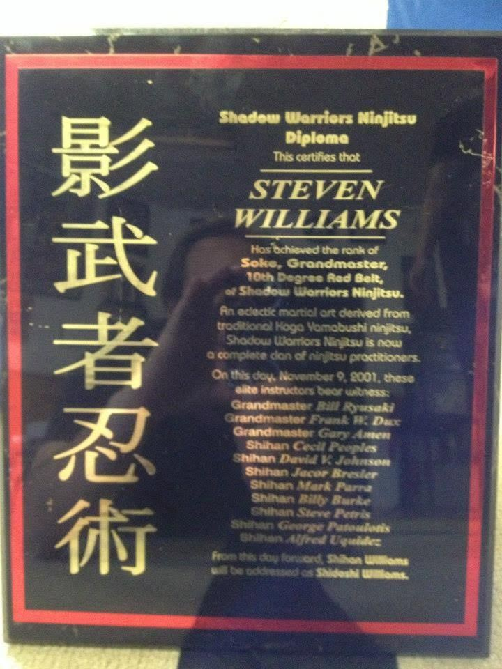
Soke & Grandmaster Certification — Nov. 9, 2001

2004 Hall of Fame Induction
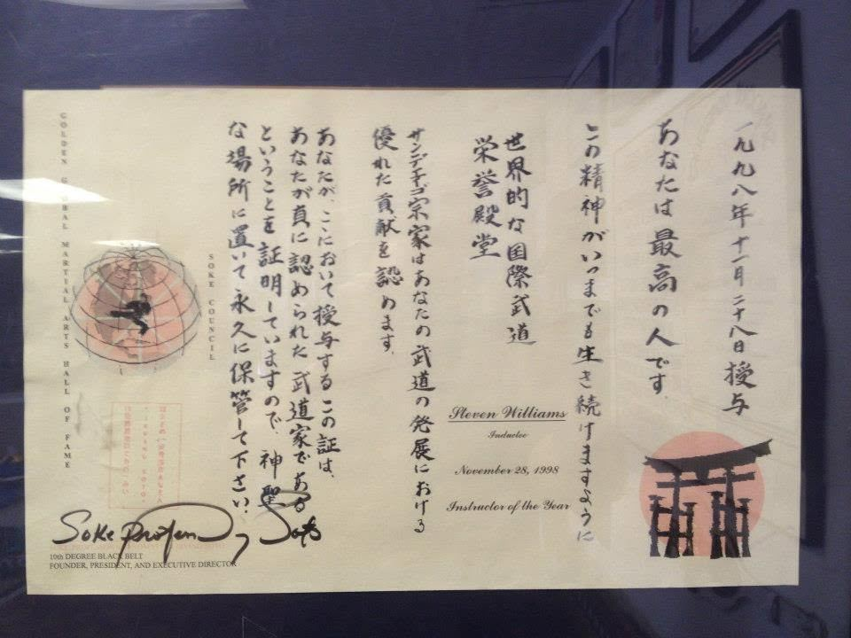
1998 Hall of Fame — Instructor of the Year
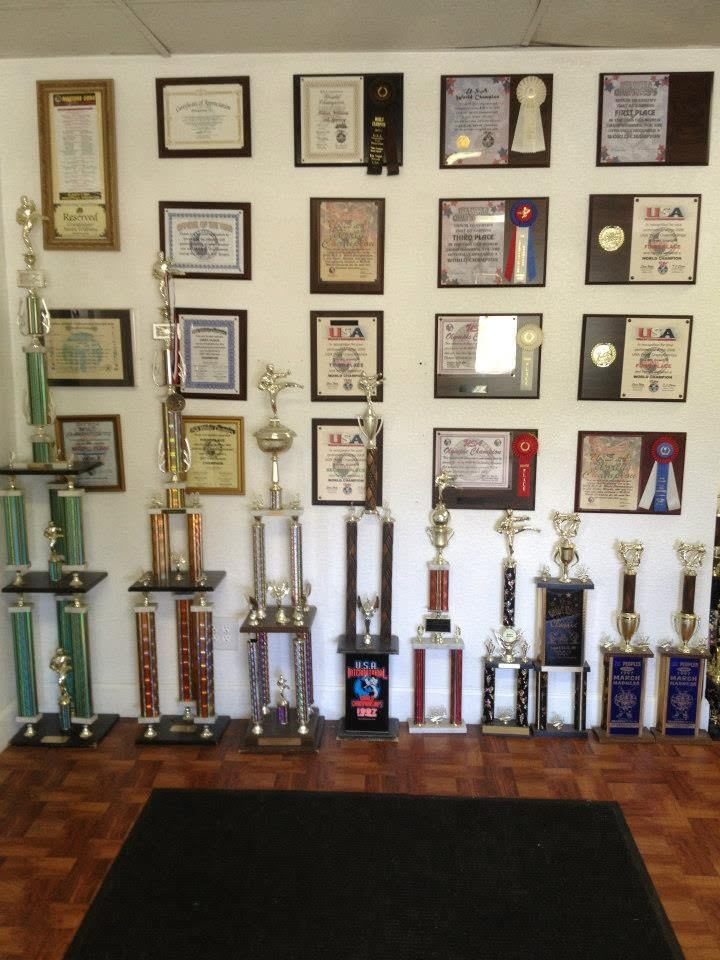
Championship Wall
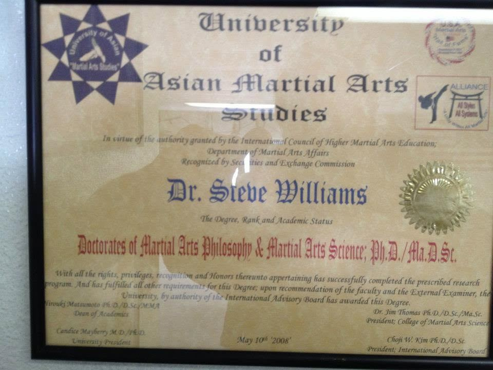
Doctorate, Martial Arts Science
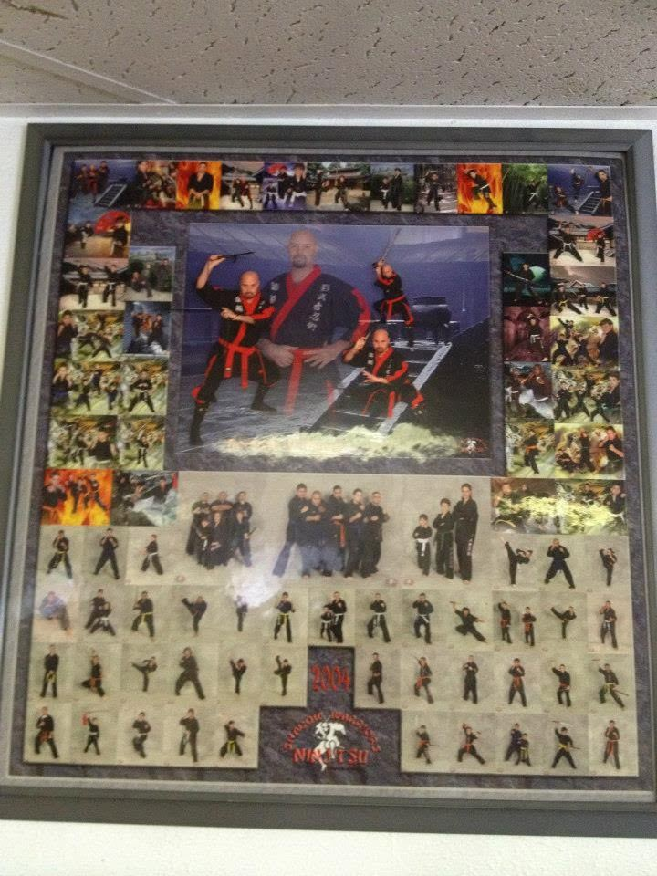
2004 System Retrospective
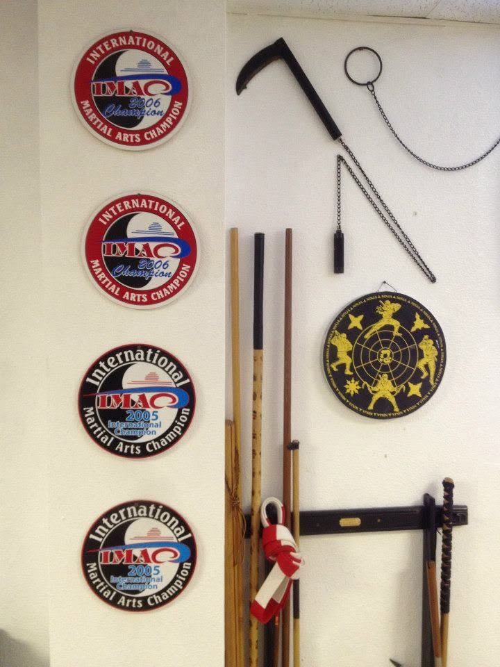
Championship Honors & Weapons
Founders & Legacy
The instructors behind the system
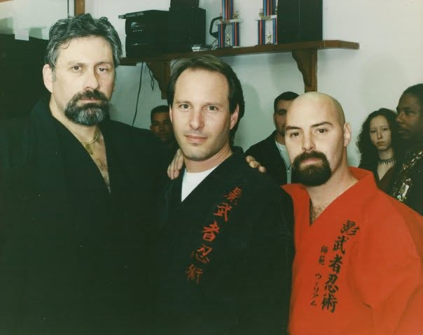
Founders & Senior Instructors
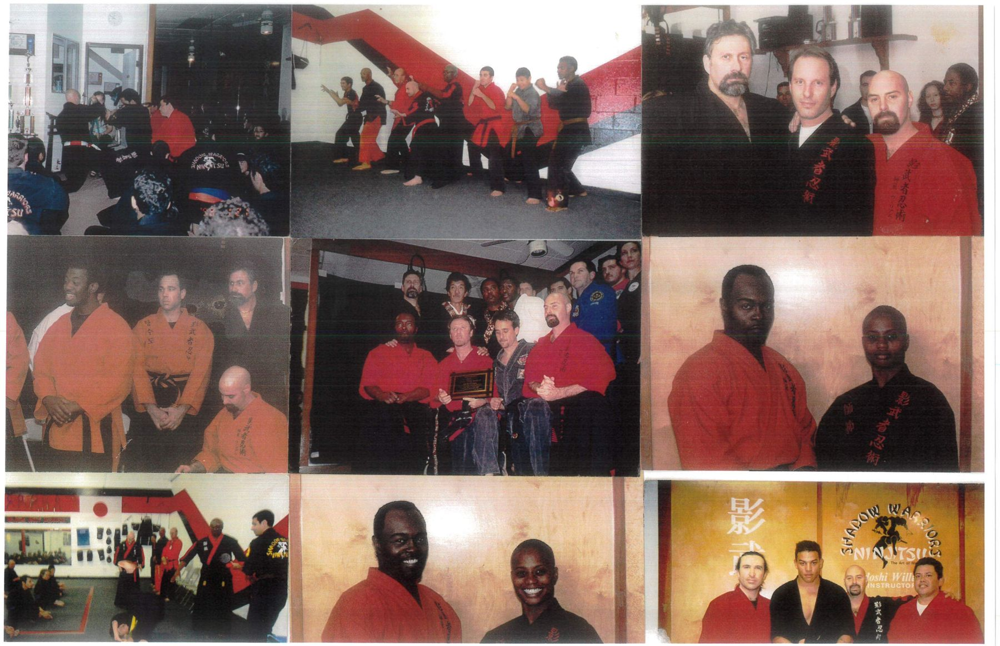
Instructor Portraits & Rank Photos

Instructor Fellowship
Training Sessions
Technique, weapons, and live instruction

Technique Demonstration
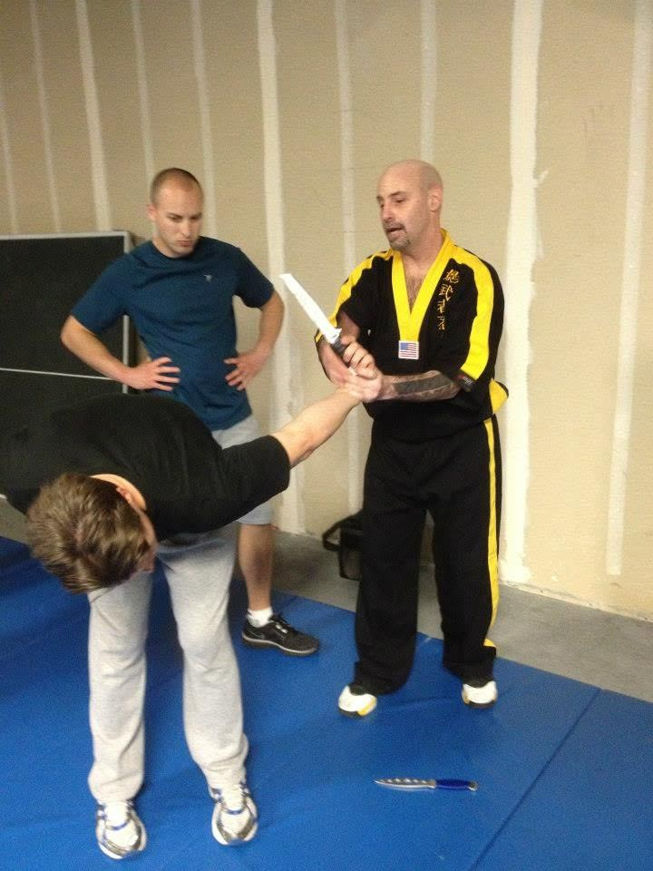
Weapons Defense — Knife
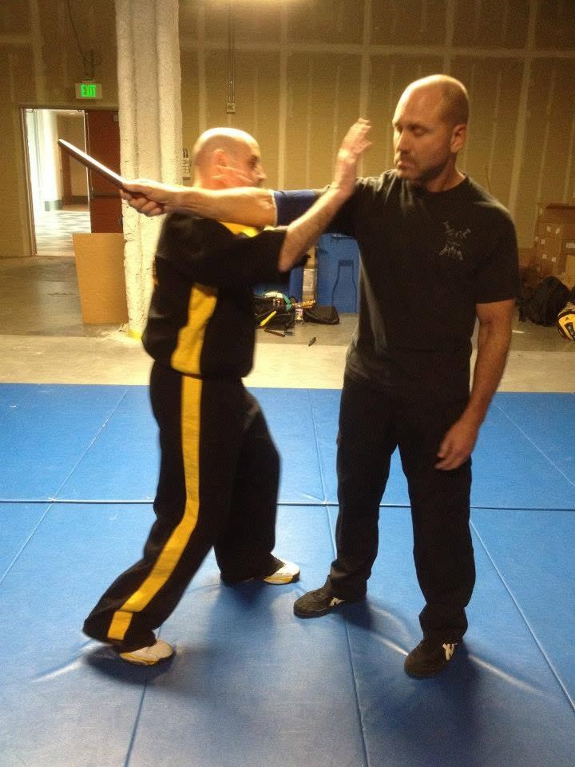
Weapons Retention Drill
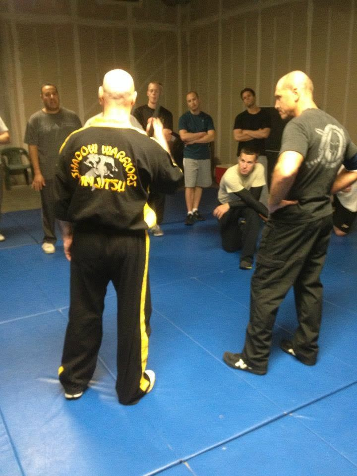
Live Instruction
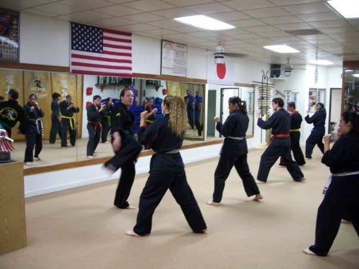
Adult Class — Striking Drills
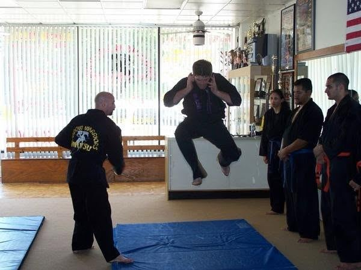
Jumping Technique Demonstration
Ceremonies
Belt promotions and rank recognition

Belt Ceremony
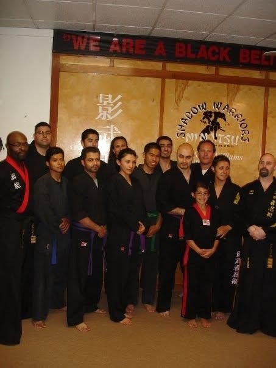
"We Are a Black Belt School"
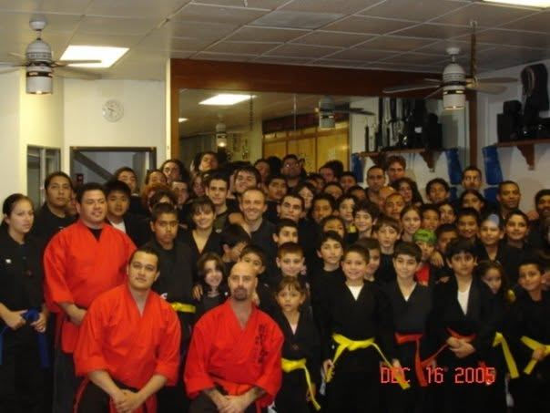
Full Dojo — December 2005
Youth Program
Training for ages 5 and up
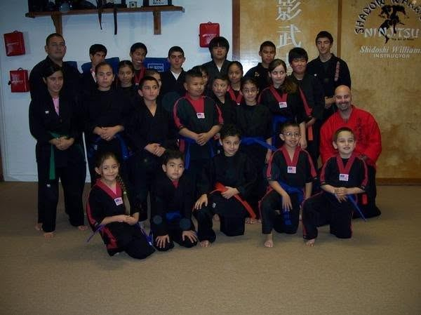
Youth Belt Ceremony
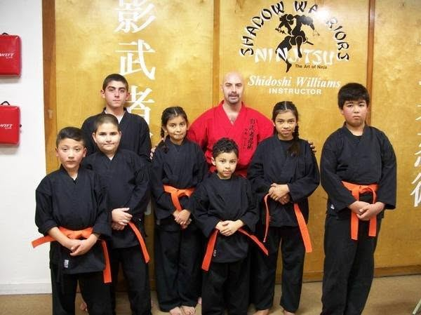
Youth Program — Orange Belts
Events
Competition and recognition
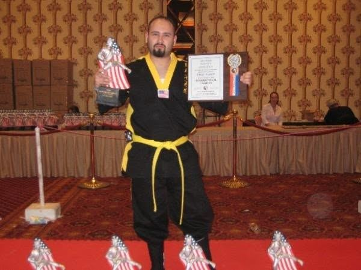
Tournament Win
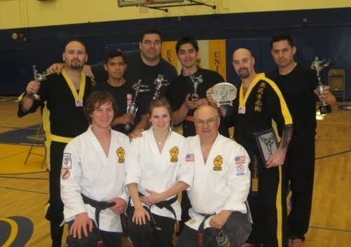
Tournament Team